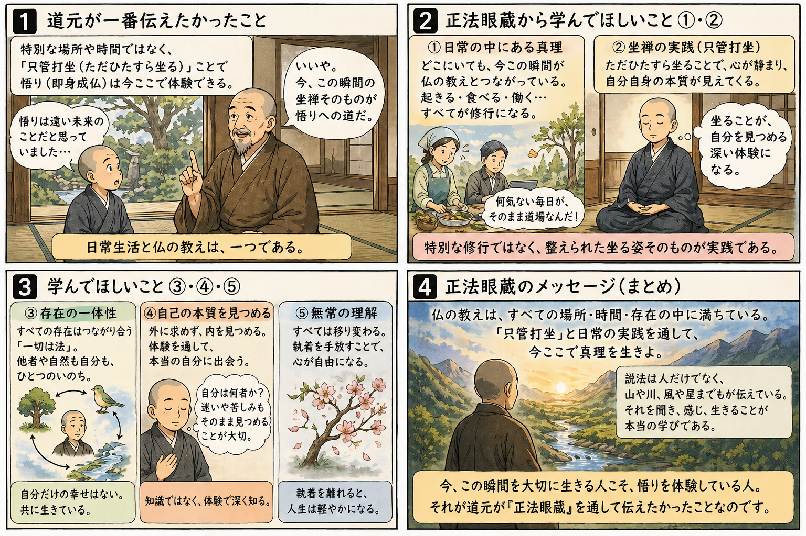

ひと息コース
辨道話と学習ガイドで、文体の癖とサイトの使い方だけを押さえます。
学習ガイドへ →Dōgen · Shōbōgenzō
語彙の足場から入り、本文の抜粋・図解・巻末の確認問題で読みを深めます。問答 Bot は出典を意識した対話の入口です（接続は環境により異なります）。
一度にすべてを終える必要はありません。心構えは学習ガイドにまとめています。

まず学習総覧で自分の関心（坐禅・時間・一体性など）に近い巻を拾い、その後はコースに沿って進めてください。
辨道話と学習ガイドで、文体の癖とサイトの使い方だけを押さえます。
学習ガイドへ →巻ページの「語彙 → 本文 → 図・深掘り → 小テスト」の流れで読みます。クイズは採点のたたき台として使えます。
巻一覧へ →キーワードから関連巻へ辿る入口です（拡張予定）。
テーマ別へ →坐禅辨道の大意があり、以後の各巻を読むための心構えになります。
辨道話へ →諸法の佛法なる時節と萬法われにあらざる時節の二段から入る、入門に読まれる一篇です。
現成公案の読解ページ →巻スコープを指定して質問できます。出典表示と免責を前提に設計しています。
Bot ページへ →七十五巻・十二巻・辨道話へのリンクと、用語辞典からの入口です。
巻一覧へ →用語辞典 から用語へ入る
研究・教育で参照されやすい篇から、語彙・抜粋・図・採点つきクイズを優先しています。詳細は各巻の紹介ページで読んでください。
比喩・場面の視覚化用です。教義の唯一の根拠にはしません。下は拡大しても劣化しない SVG の例です。
全文テキストはプロジェクト内 doc/正法眼蔵.txt を正とします。公開サイトに載せる範囲は権利処理に従ってください。